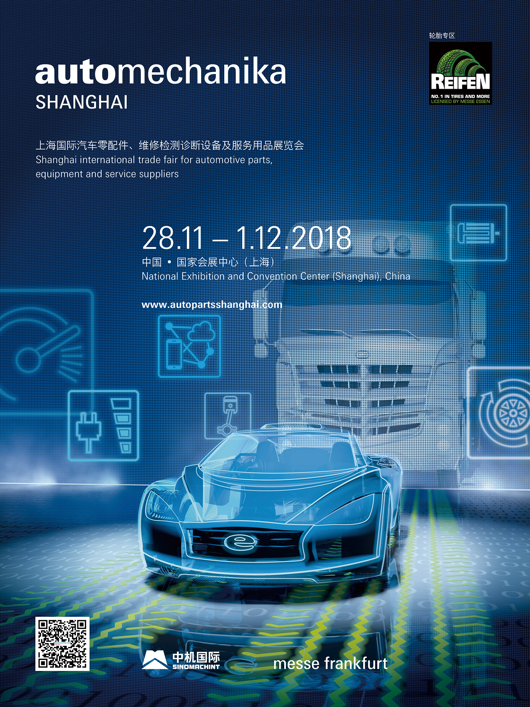

第十四届Automechanika Shanghai经历了迄今为止参与度和国际化程度最高的一届，为期四天的展会已于12月1日在北京国家会展中心圆满闭幕。作为覆盖汽车全产业链的大型行业服务平台 – Automechanika Shanghai 展览会为业內人士提供了信息交流、行业推广、商贸对接及产业教育的全方位机遇，丰富多彩的同期活动，获得了与会者的积极反馈和好评。今年展会再一次打破多项历届纪录。
2018年Automechanika Shanghai各项数据：
l 来自43个国家和地区的6,269 家参展企业(增长4%)
l 350,000平方米展示面积(增长3%)，共13个展厅
l 来自145个国家和地区的150,568 名专业观众(增长15%)
l 来自22个国家和地区的162 个专业观众团(增长9%)
l 共有19个国家及地区展团参展
l 57场精彩纷呈的同期活动、论坛及研讨会在展会期间举办
展会期间与会者络绎不绝，人声鼎沸的国家会展中心俨然被打造成为北京年末的一道亮丽风景线。参展企业及与会观众对于展会的快速成长和紧跟不断变化的市场趋势，给予了高度评价。今年Automechanika Shanghai汇集了一系列新增专区和备受瞩目的热点板块，为整个汽车供应链提供了最新的产品和服务的展示平台。
基于去年的各方建议，今年主办方在原有展会基础上扩充并增设了多个板块和主题专区。其中最受欢迎的是位于展馆北厅的全新明日出行板块，参展企业带来了创新产品和前沿市场趋势，包括数字化、车联网、新能源、自动驾驶、新型移动服务的突破性高科技产品。
此外，针对汽车后市场升级转型而首次设立的终端服务连锁专区也同样获得了参展商和业内人士的高度赞誉，该专区汇聚售后市场上下游供应链资源，为维修终端提供了一站式的采购平台，甚具吸引力。随着中国汽车后市场特别是维修和保养领域分销渠道和经营模式的转变，连锁品牌和终端门店数量的激增。这一终端后市场新业态的无限潜力在Automechanika Shanghai现场得到了充分的体现，终端服务连锁专区汇聚了一众连锁品牌，电商平台及终端门店，包括阿里巴巴、好美特、京安途、开思、康众、快准车服、龙蟠、欧洲维修汽车服务、三头六臂、途虎养车、中驰车福及中航骏驰等。专业观众可以在展会现场直观感受到中国汽车售后市场蓬勃的发展现状。
与终端服务连锁专区相邻，同处7.2号馆再度回归的REIFEN轮胎板块，为业界顶级轮胎、轮毂及轮辋产品供应商提供了绝佳的展示平台。两大展区紧密连接，有助于彼此跨领域间的深入交流和商贸往来。
本届展会众多国内外知名品牌首次强强联手亮相，包括阿尔卑斯、倍耐力、标致雪铁龙、博泰、东莞正扬、风神、海康威视、亨特、加拿大石油润滑油 、今飞、京滨、昆仑润滑油、迈威斯、Petlas、SASH、森萨塔、双星轮胎、统一、新威、意大利百塔工具、英威腾、中通视际等。此外，再度回归的参展企业包括艾沃意特、爱信、倍适登、博世、布雷博、采埃孚、大力、大陆汽车、大师钣喷、德尔福、电装、恩梯恩、富奥、海拉、火鹰、霍尼韦尔、康迪泰克、蓝点、力魔、曼芙丽、曼胡默尔、米其林、MOTUL、上汽集团、上汽通用德科、舍弗勒、胜牌、世达、索纳克斯、泰克、特陶实业、万安、现代集团、引能仕、元征、中国兵器、中国长安、中国中车、中原内配等。众多行业龙头企业及知名品牌的积极参与，再度印证了Automechanika Shanghai的行业领军地位，促进了全球汽车市场品牌宣传、人脉交往、商贸接洽和业务拓展。
法兰克福展览（香港）有限公司副总经理周劭阑女士对展会的稳步成长深表满意，并评价道：“在过去几年中，我们迎来了众多海内外市场领先的优秀参展企业加入到展会阵营中，这一数字保持快速增长。我非常高兴见证Automechanika Shanghai正成为汽车行业新品发布的最佳平台，这也意味着对于产品和服务采购商来说该展会是如此的重要，也正是因为各方的共同努力，Automechanika Shanghai已成为全球汽车行业最重要的盛会之一。”
与此同时，57场精彩绝伦的同期活动也在展会期间缤纷上演，多场高质量的活动深度剖析汽车行业未来发展蓝图，演讲嘉宾和与会观众均予以高度评价。其中多场重头高峰论坛紧扣行业前瞻议题，包括2018年汽车售后市场高峰论坛、AIAG汽车零部件采购高层及供应商峰会、2018年明日出行高峰论坛、第三届智能网联汽车北京峰会、2018年绿色钣喷高峰论坛及中外轮胎行业合作发展论坛。
北京励丰国际展览有限公司副总经理程永顺先生表示：“在汽车及后市场行业面临诸多变化的当下，我们通过这样一届汇聚行领域专业人士的展会，共同探讨技术的发展、市场的走向和行业的未来，旨在帮助更多的相关从业者了解最新产品、学习关键技术、把握市场机遇，对已经或者即将到来的挑战做好充分的准备。能够获得参展商、买家和会议观众的认可，说明展会是在持续创造价值的。我们将会继续以推动开放合作、实现共同发展为己任，服务并满足本地和国际市场的需求。”
国际化水平再创新高
2018年Automechanika Shanghai海外参展企业数量增长显著，共有来自43个国家和地区的企业共同参加，卢森堡首次加入参展阵营，再次回归的参展地区包括捷克、黎巴嫩和斯洛文尼亚等，本届展会参展国家及地区数量同比增长3%。同时，今年共有19个国家及地区展团齐齐亮相，它们分别是阿拉伯联合酋长国、巴基斯坦、波兰、德国、法国、韩国、马来西亚、美国、日本、泰国、土耳其、西班牙、新加坡、意大利、印度、印度尼西亚、英国、中国台湾及中国香港。
作为面向全球的展览会，展会一向致力于拓展海内外买家资源，为全球参展企业和买家缔造了新的交流渠道，促进商贸往来。今年最多观众来源地区分别是：中国、中国台湾、韩国、马来西亚、俄罗斯、印度、泰国、日本、美国、澳大利亚和德国。
与会者对展会覆盖全面的汽车各板块给予高度赞扬
明日出行板块参展商，浙江亚太机电股份有限公司国际贸易部经理杨会娟女士表示：“本次我们带来了汽车电子助力系统IBS、轮毂电机等诸多新品亮相，获得了众多专业观众的垂询并进行了深入交流。本届Automechanika Shanghai扩大了明日出行板块的面积，此举契合了新兴趋势、把握市场风向，为我们更好地展现智能驾驶技术提供了平台。我们不仅接到很多客户的业务咨询，更通过展会的契机与专业买家取得了深入的交流。此外，观众专业度也提高显著，其中来自决策层和企业高层的观众数量也占总数的较高比例。”
终端服务连锁专区参展商，江苏康众汽配有限公司市场部高级市场专员单婷女士表示：“作为汽车后市场的一分子，我们能够在此认识到更多上下游的客户，为我们展商带来了很多的便利。今年我们展位不仅吸引到了目标客户，更有一些慕名而来的潜在买家，在扩展业务、宣传品牌方面给我们带来了很大的帮助。今年主办方将我们汽配供应链服务商划分在同一个专区，提高了专业性和针对性，可以说是一大亮点。”
REIFEN轮胎板块参展商，土耳其Petlas Tyre Industry and Trade助理出口经理Aykut Kutlu先生表示：“这是我们第一次参加Automechanika Shanghai，我们为能够接触到如此多的观众兴奋不已。选择参加Automechanika Shanghai，基于两点考虑：一方面中国汽车市场潜力巨大，我们希望借此契机进军中国汽车市场；另一方面Automechanika Shanghai规模令人印象深刻，也吸引众多专业优秀的潜在买家慕名而来，在展会上有助于我们接触更多的海外客户及买家。我们会好好利用这些平台优势来实现参展预期。”
汽车零部件板块参展商，曼胡默尔管理（北京）有限公司中国汽车售后服务市场业务单元副总裁康凯安先生表示：“我们希望通过参加 Automechanika Shanghai在中国市场宣传全新企业形象、提升曝光度以及接触更多新客户，以进一步发展国内业务。主办方的管理和安排十分专业，展会也有很高的国际参与度。这次参展效果非常理想，我们的展台经常挤满观众，当中不少是国内的经销商和维修终端。可以说，我们的参展目标都一一达成了。”
电子及系统板块参展商，浙江松田汽车电机系统股份有限公司销售部经理郑晓芳女士表示：“这次我们在展会主打旗下的无刷电机新品。首先Automechanika Shanghai对于我们而言能接触到更多产业链上下游的专业客户，Automechanika的全球网络和国际化品牌对于我们中国本土品牌而言，无疑是借助这个全球化平台去推广中国制造。展会期间很多现有合作的大品牌比如德尔福、博世、大陆等都已与我们进行深入的交谈。除此之外今年的海外客人比例也有所增长，接下来我们也会持续关注新能源汽车领域的发展，和我们的合作伙伴进行紧密配合。”
汽车维修与保养板块参展商，路特利举升机（海门）有限公司的销售总监沙斌先生表示：“此次参加Automechanika Shanghai，除了让我们成功建立了公司的品牌形象之外，我们还发掘了诸多极具潜力的新商机。展会期间到我们展位参观的海外经销商络绎不绝，我们已经与来自澳大利亚、印度和许多东南亚国家的专业观众相互交流，共襄商机。 他们对我们的多种轮胎解决方案很感兴趣，其中包括四轮定位仪、拆胎机和车轮平衡解决方案等。Automechanika Shanghai无疑在推动亚洲和中国市场发展方面发挥着重要作用。 它是世界级的交易平台，组织有序，非常专业，让我们可以借此契机，通过扩大在整个地区的分销网络来提高品牌知名度。”
汽车用品及改装板块参展商，青岛康普顿科技股份有限公司的项目经理吴万超先生表示：“这是我们公司第二年参加Automechanika Shanghai，该展会作为一个高端平台，让行业内的知名企业聚首，为买家提供一站式采购平台的同时，也满足了我们需求高质量目标客户的需求，今年的招商效果比去年更好。我们公司主要经营润滑油产品，目前国内的汽车后市场非常庞大，国外的大品牌争相入驻，所以我很看好润滑油市场的发展前景。”
国内专业观众，广州市高粤商贸有限公司总经理高东强先生表示：“我们这次参观展会主要想寻找轮胎、汽车人工智能应用的供应商。Automechanika Shanghai的资源众多，尤其是轮胎和汽车用品方面；此外展会还专门设有REIFEN轮胎板块以及轮胎方面的论坛，高度契合我们的采购需求。随着全球汽车产量和道路运输物流市场的稳步增长以及一带一路倡议的实施，轮胎行业的发展前景一片向好。Automechanika Shanghai是一个优秀的商贸平台，它紧跟市场趋势、整合行业资源，为我们带来更多选择的同时，更为我们公司下一步的发展找到了方向和资源。”
国内专业观众，广州市骏亿汽车检测维修设备有限公司市场部总监刘汉强先生表示：“Automechanika Shanghai对于我们来说最大的吸引力就在于它涵盖了汽车后市场全产业链的各大板块产品，由于我们是从事4S店整体架构和输出的工作，自身代理的各类维护设备也是品类繁多，在展会现场除了纵向去看一些维修检测设备以外，我们还能去找一些汽车用品、美容类、电子类产品去延伸我们的服务，每一次参观的效率都非常高，是同类展会中质量最高的。目前‘以养代修’正成为主流趋势，我能感受到展会在积极引进一些技术含量高的前沿产品，能通过这些新产品了解到市场的新热点。”
海外专业观众，德国Automotive Nord公司总经理Oliver Schrader先生表示：“我来自德国北部的一个汽车产业集群，此次随专业买家团前来观展。我们的汽车产业集群汇集了约400家企业，我和诸如大众这样的公司也有业务往来。我是原厂设备供应商，这次我会重点搜罗产品。此外我也很关注展会上诸如电动汽车、自动驾驶以及车联网等覆盖整个汽车产业链的最新技术发展。我觉得Automechanika Shanghai是一个可以让我一次性饱览整个汽车产业的相关技术和产品的专业展会。”
海外商会，雪隆机械及车辆零件商会(EMPTA)副主席高平业先生表示:“我们在马来西亚拥有900名会员及会员组织，当中包括汽车制造商、进出口商、经销商等，今年观展的目的主要是来了解整个行业的发展趋势和采购新的产品。会员的收获很丰富，展会的规模越来越大，产品数量相继上升。我们亦注意到中国零部件的质量和覆盖面有所提升。同时，明日出行板块亦令我印象深刻，这主题对行业来说是很重要的，因为它反映了新的信息和汽车未来的发展趋势。”
同期活动演讲嘉宾，标致雪铁龙集团战略及采购负责人赵冰先生表示：“我们此次展出的产品已经本土化生产，并且我们计划在明年将产品线增至30条。为此，我们希望通过Automechanika Shanghai这个平台向与会者宣传我们的品牌理念。此外，我们公司也参与多项同期活动，并和大家分享我们的产品、战略以及分销渠道。我认为同期活动的组织井然有序，与会观众的综合质量也很高，同时倾听其他演讲嘉宾的行业洞解也让我受益匪浅。 我感觉Automechanika Shanghai是一个十分优秀的平台，通过这个平台我们品牌可以和整个汽车产业的专业人士深入接触，此次参展已经完美达到目标。”
2018智能网联北京汽车峰会与会观众，北京汇众汽车制造有限公司总经理助理兼新能源底盘集成科执行经理倪海华先生表示：“我们是一家底盘生产厂家，我主要是从事新能源底盘业务。此次的演讲者们都是业内顶尖的专家，他们对于数字出行生态系统的见解也颇具前瞻性令我很受启发。我认为峰会举办的非常不错，议题都颇具吸引力，演讲嘉宾都是业内的权威人士，是难得能够和专家面对面交流的好机会。论坛提供了电子系统革新领域的最新数据统计和分析，让我对数字移动领域的未来有了一个大致的了解，这可以为我们公司的战略提供一个可靠的参考。”
2019年Automechanika Shanghai将于2019年12月3日至6日再度举行。